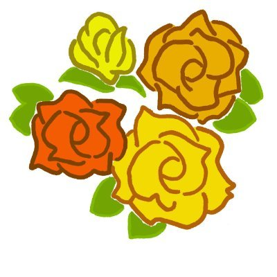
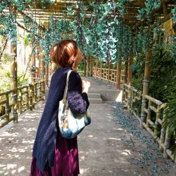

Git勉強会練習用ページです！
お気軽に参加してくださいね♪
参加は
こちら(GitHub)
から
玄米
お家時間にしてること
映画
ドラマ
音楽
ぶるく
お家時間にしてること
Twitter
ソシャゲ
youtube
お猫様と寝る

すみなべ
お家時間にしてること
お茶
書いたり描いたり読んだり調べたりいろいろ
ボイパ

ズケ
お家時間にしてること
youtube見てるよ~
コーヒーが好きです
豆乳は無調整を飲むようにしてます
ごはん作るもの食べるのも好きだよー
しじみしゃちょー
お家時間にしてること
作曲
Twitter監視
ベイブレード
Q.あなたのお家時間を教えてください～！
三線を弾く（沖縄民謡が好きです）
紅型の製作
ものづくり
家事
norikoagarie あがりえのりこ
Q.あなたのお家時間を教えてください～！
家事本当だよ。
家事しかしてない。本当だよ。
huluなんかみてない。本当だよ。
読書もしてたわ
みー